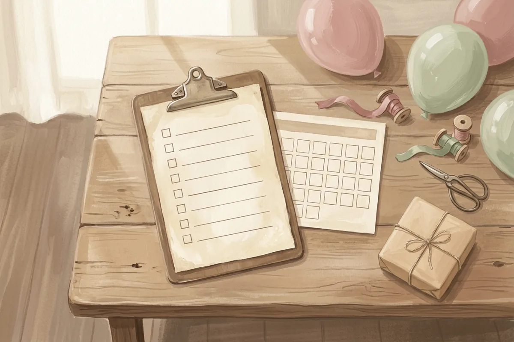

Tổ chức thôi nôi tại nhà hợp với tiệc dưới 50 khách và cần khoảng 3–4 tuần chuẩn bị: chốt ngày và danh sách khách, gửi thiệp, đặt mâm cúng và cỗ, rồi trang trí gọn trong 1 ngày. Ngân sách chia thành 3 mức theo số khách (khoảng 20, 35 và 50 người) và theo phần bạn tự làm hay thuê. Trang trí xoay quanh 1 backdrop và 1 bàn bánh, chủ đề chọn theo màu hoặc theo con vật. Thực đơn gồm cỗ mặn cho người lớn, đồ ăn cắt nhỏ cho trẻ em và 1 chiếc bánh ít ngọt cho bé. Dưới đây là kế hoạch chi tiết, từ câu hỏi "có nên làm ở nhà không" đến lúc tiễn vị khách cuối cùng.
Có nên tổ chức thôi nôi, đầy tháng tại nhà không?
Nên, khi khách dưới 50 người và nhà kê được 4–8 mâm: bạn chủ động chi phí, bé ngủ đúng giờ, lễ cúng và tiệc diễn ra liền mạch. Trên 50 khách hoặc nhà chật, bạn cân nhắc nhà hàng hoặc chia tiệc thành 2 ca. Lợi thế lớn nhất của tiệc tại nhà nằm ở quyền quyết định từng hạng mục. Báo Lâm Đồng (12/2025) nhận xét tự trang trí tại nhà giúp gia đình kiểm soát chi phí và ý tưởng tốt hơn. Đổi lại, bạn gánh phần dọn dẹp, kê bàn và rửa bát. Bảng dưới so sánh 3 cách tổ chức để bạn chọn nhanh.
| Tiêu chí | Tự tổ chức tại nhà | Nhà hàng | Thuê dịch vụ trọn gói tại nhà |
|---|---|---|---|
| Chi phí | Chủ động từng hạng mục | Theo suất hoặc theo bàn, cố định | Theo gói, cộng phí dựng và dọn |
| Công sức gia đình | Nhiều nhất | Ít nhất | Trung bình |
| Hợp với đầy tháng | Hợp nhất: ít khách, mẹ ở gần phòng riêng | Ít hợp: mẹ và bé phải di chuyển | Hợp nếu nhà đủ chỗ dựng |
| Hợp với thôi nôi | Hợp khi dưới 50 khách | Hợp khi trên 50 khách | Hợp khi muốn góc chụp ảnh chỉn chu |
| Giờ ngủ và an toàn của bé | Giữ đúng giờ, có phòng riêng | Khó cho bé ngủ trưa | Giữ đúng giờ, cần kiểm đồ trang trí |
| Lễ cúng | Làm ngay tại bàn thờ nhà | Cúng ở nhà trước rồi di chuyển | Làm tại nhà, dịch vụ có thể kèm mâm cúng |
Mỗi người trong nhà nhìn bữa tiệc từ một phía. Mẹ mới sinh cần nghỉ, nên đầy tháng tại nhà với ít khách giúp mẹ vào phòng cho bú bất cứ lúc nào. Ông bà coi trọng phần cúng và mâm cỗ, nên tiệc tại nhà giữ được lễ cúng ngay trước bàn thờ. Bố bận đi làm thì nên nhận trọn một mảng (đặt cỗ hoặc dựng backdrop) thay vì làm mỗi thứ một chút. Khi cả nhà đã chọn làm tại nhà, việc tiếp theo là chia lịch.
Checklist tổ chức thôi nôi tại nhà theo 4 mốc thời gian
Chia việc theo 4 mốc: trước 4 tuần (ngày, khách, ngân sách), trước 2 tuần (gửi thiệp, đặt cỗ, mâm cúng, bánh), trước 3 ngày (chốt khách, mua đồ trang trí, đồ bốc) và ngày tiệc (cúng, tiệc, dọn). Với đầy tháng, bạn rút còn 1–2 tuần vì khách ít hơn. Mỗi mốc dưới đây là một danh sách ngắn để in ra dán tủ lạnh và đánh dấu dần.

Trước 4 tuần: chốt ngày, khách và chủ đề
- Chốt ngày và giờ. Ngày thôi nôi tính theo âm lịch và mỗi vùng có cách lùi ngày riêng; xem cách tính ngày thôi nôi trước khi báo ông bà.
- Lập danh sách khách theo nhóm: nội, ngoại, bạn của bố mẹ, hàng xóm. Ghi số người lớn và số trẻ em riêng.
- Đặt trần ngân sách theo bảng 3 mức ở mục dưới.
- Chọn 1 chủ đề (màu hoặc con vật) để thiệp, backdrop và bánh cùng tông.
Trước 2 tuần: gửi thiệp, đặt cỗ và mâm cúng
- Gửi thiệp mời trước 10–14 ngày, kèm lời nhắn riêng cho từng người; tham khảo mẫu lời mời thôi nôi, đầy tháng để không phải nghĩ từ đầu.
- Đặt mâm cúng hoặc lên danh sách tự sắp. Lễ vật từng vùng một khác, bạn xem đủ ở bài mâm cúng Bà Mụ.
- Đặt cỗ và bánh kem: báo số mâm tạm tính, hẹn ngày chốt số cuối.
- Thuê hoặc mượn bàn ghế, bát đĩa nếu nhà không đủ cho số mâm dự kiến.
Trước 3 ngày: chốt số khách, mua đồ, giữ lịch ngủ của bé
- Chốt số khách từ tin nhắn xác nhận rồi báo bên nấu cỗ. Xem cách thu xác nhận tham dự để không phải gọi từng người.
- Mua bóng, backdrop, khăn bàn. Báo Lâm Đồng (12/2025) gợi ý lên kế hoạch và mua sắm trước 1 tuần để tránh thiếu đồ phút chót.
- Chuẩn bị khay đồ bốc; danh sách món và ý nghĩa nằm ở bài đồ bốc thôi nôi.
- Giữ nguyên lịch ăn ngủ của bé 3 ngày trước tiệc, không cho bé đi chơi xa.
Ngày tiệc: timeline theo giờ ngủ của bé
Giờ cúng mỗi nơi một khác. Có nơi cúng vào sáng sớm, có nơi cúng chiều tối, theo VOH (2018); Hello Bác sĩ (2021) ghi lễ cúng thôi nôi hay làm vào buổi sáng. Ví dụ dưới đây dành cho nhà cúng sáng, đãi trưa; bạn dời giờ theo lịch ngủ quen của bé.
- 7:30 — bày mâm cúng, dọn góc backdrop lần cuối.
- 8:00–9:00 — cúng, chỉ người nhà dự.
- 9:00–10:30 — cho bé ăn và ngủ giấc ngày đầu tiên; người lớn bày cỗ.
- 10:30–11:00 — đón khách, bé vừa tỉnh nên vui vẻ hơn.
- 11:00 — bốc đồ, sau đó vào tiệc.
- 12:15 — cắt bánh, chụp ảnh gia đình trước backdrop.
- 13:00 — tiễn khách, gửi quà cảm ơn; bé vào phòng ngủ trưa.
Có checklist rồi, câu hỏi kế tiếp gần như nhà nào cũng hỏi: tất cả việc này hết bao nhiêu tiền?
Tổ chức thôi nôi tại nhà hết bao nhiêu tiền?
Chi phí phụ thuộc vào số khách và phần bạn tự làm. Cách ước tính: đếm số mâm cỗ, cộng 5 hạng mục còn lại (mâm cúng, bánh, trang trí, thiệp, quà cảm ơn), rồi điền đơn giá từ 2–3 báo giá thật. Templexa không đưa một con số tổng, vì giá cỗ, bánh và bóng chênh nhau theo thành phố và theo mùa. Bảng dưới cho bạn khung số lượng của 3 mức; bạn chỉ cần điền đơn giá.
| Hạng mục | Gọn (~20 khách) | Vừa (~35 khách) | Đủ (~50 khách) | Tự làm hay thuê? |
|---|---|---|---|---|
| Cỗ, đồ ăn (mâm 6 người) | 4 mâm | 6 mâm | 9 mâm | Từ 6 mâm trở lên nên đặt nấu sẵn |
| Mâm cúng | 1 mâm | 1 mâm | 1 mâm | Tự sắp nếu nhà quen lễ, không thì đặt trọn gói |
| Bánh kem | 1 bánh 1 tầng | 1 bánh 1 tầng lớn | 1 bánh + bánh nhỏ riêng cho bé | Đặt tiệm, hẹn giao trước giờ cắt 2 tiếng |
| Trang trí | 1 góc backdrop | Backdrop + bàn bánh | Backdrop + bàn bánh + lối vào | Tự dựng được với bộ bóng có sẵn |
| Thiệp mời | In giấy: tính theo số hộ được mời · Online: 1 link gửi cho mọi khách, ví dụ gói Basic tại Templexa 150.000đ | Online gửi qua Zalo, có nút xác nhận | ||
| Quà cảm ơn | Theo số hộ | Theo số hộ | Theo số hộ + trẻ em | Tự gói hoặc đặt theo bộ |
| Dự phòng | Cộng thêm khoảng 10% tổng để phòng khách đi thêm người | — | ||
Tổng = (số mâm × giá 1 mâm) + mâm cúng + bánh + trang trí + thiệp + (số hộ × giá 1 phần quà) + 10% dự phòng.
Phần cỗ chiếm nhiều tiền nhất, nên đây là chỗ cần báo giá kỹ nhất. Một mốc tham khảo công khai: VnExpress (16/02/2026) ghi nhận nguyên liệu tự nấu một mâm cỗ khoảng 600.000–1.000.000 đồng, còn tại một chuỗi siêu thị, mâm cỗ cấp đông được chọn nhiều nhất có giá 600.000–700.000 đồng. Số liệu này đo dịp Tết, nên giá cỗ tiệc ngày thường của bạn có thể khác. Áp vào mức "vừa" 6 mâm, phần cỗ tự nấu rơi vào khoảng 3,6–6 triệu đồng tiền nguyên liệu. Với mâm cúng trọn gói, bóng trang trí và bánh kem, Templexa chưa tìm được báo giá công khai có ngày rõ ràng, nên bài không đưa số; bạn hỏi 2–3 nơi gần nhà rồi điền vào bảng.
Trang trí thôi nôi tại nhà đơn giản: ý tưởng backdrop cho bé trai, bé gái
Trang trí thôi nôi tại nhà tập trung vào 1 góc: backdrop (bóng + bảng tên), bàn bánh và lối vào. Bé trai hợp xanh navy, xanh lá, vàng mù tạt; bé gái hợp hồng phấn, tím nhạt, trắng; chủ đề con vật hợp cả hai. Gợi ý màu theo giới tính này khớp với bài hướng dẫn của Báo Lâm Đồng (12/2025). Một góc làm đẹp luôn hơn năm góc làm dở, vì mọi bức ảnh sẽ chụp ở đó.
5 chủ đề trang trí thôi nôi dễ làm tại nhà
- Thỏ và mây: hồng phấn, kem, xanh trời nhạt; bóng hình mây, thỏ bông đặt cạnh bàn bánh.
- Gấu: nâu sữa, be, xanh mint; gấu bông làm "khách mời" ngồi trên ghế nhỏ.
- Biển, thuỷ thủ: xanh navy, trắng, đỏ; phao tròn, mỏ neo giấy, thuyền giấy trên bàn.
- Safari, Wild One: xanh lá, vàng mù tạt, nâu; lá cây giấy và thú nhồi bông.
- Vườn hoa: hồng, kem, xanh lá; hoa giả cắm lọ thấp, tránh hoa có phấn rơi xuống bàn bánh.
Trang trí trong căn hộ nhỏ
Căn hộ chung cư cần đồ trang trí tháo được và không chiếm lối đi. Dùng băng dính tháo không để lại vết thay đinh. Bơm bóng bằng không khí thay khí heli: bóng không bay lên trần, dễ gom, không phải thuê bình. Báo Lâm Đồng (12/2025) gợi ý dùng bơm điện để tiết kiệm thời gian bơm bóng. Quan trọng hơn, Viện Nhi khoa Hoa Kỳ (AAP) cảnh báo bóng bay gây nguy cơ hóc cho trẻ đến 8 tuổi, nên bạn gom ngay bóng xẹp, bóng vỡ và treo bóng cao khỏi tầm tay trẻ. Nếu khách lần đầu đến nhà, một mã QR chỉ đường tới nhà dán ở sảnh giúp họ khỏi gọi hỏi đường.
Đồ trang trí cần mua
- Bóng 2–3 màu theo chủ đề, kèm thanh hoặc khung tạo cổng bóng.
- Bảng tên hoặc dây chữ ghi tên bé.
- Khăn trải bàn bánh cùng tông, dài chạm đất để che chân bàn.
- Đồ bàn bánh: đĩa, dĩa, nến số, khung ảnh bé qua từng tháng.
Thiệp và backdrop cùng tông giúp khách nhận ra chủ đề ngay từ lúc mở link. Nếu bạn đã chọn chủ đề, có thể xem thiệp sinh nhật 1 tuổi cùng chủ đề, hoặc mở thẳng từng mẫu: Bunny & Cloud (thỏ và mây), Bear Party (gấu), Little Sailor (thuỷ thủ), Wild One (safari) và Bé Mimi (pastel hoa hồng).
Thực đơn tiệc thôi nôi tại nhà gồm những món gì?
Thực đơn gồm 3 phần: mâm cỗ mặn 6–8 món cho người lớn, đồ ăn cắt nhỏ cho trẻ em và 1 bánh ít ngọt cho bé. Đặt cỗ theo mâm 6 người giúp tính số lượng dễ hơn tiệc buffet. Mâm cố định số người nên bạn biết chính xác cần bao nhiêu phần. Buffet lại khó đoán vì khách lấy không đều. Mỗi phần dưới đây có một điểm cần lưu ý riêng.
Cỗ mặn theo 3 miền (gợi ý)
Đây là gợi ý, không phải quy định; nhà bạn quen món gì thì giữ món đó. Có nơi ở miền Bắc chuộng gà luộc, xôi gấc, nem rán, giò và canh măng. Có nơi ở miền Trung thêm bánh bèo, nem lụi hoặc gỏi cá. Có nơi ở miền Nam đãi gỏi ngó sen, gà quay, lẩu và chè. Mâm 6–8 món nên có ít nhất 1 món rau và 1 món canh để người lớn tuổi dễ ăn.
Đồ ăn cho trẻ em khách mời
Trẻ em đi theo bố mẹ cần đĩa riêng, món mềm, cắt nhỏ. AAP khuyến nghị cắt thức ăn cho trẻ nhỏ thành miếng không quá 1,3 cm (nửa inch), cắt nhỏ nho nguyên quả và xúc xích, và chưa cho trẻ dưới 4 tuổi ăn các loại hạt, bỏng ngô, kẹo cứng (trang cập nhật 02/2026). Bạn đặt đĩa trẻ em ở bàn thấp, có người lớn ngồi cạnh.
Bánh kem cho bé 1 tuổi
Chiếc bánh để cắt và chụp ảnh không nhất thiết là bánh bé ăn. AAP khuyên không cho trẻ dưới 2 tuổi ăn đồ có đường bổ sung, nên nhiều nhà làm thêm một "smash cake" nhỏ, ít ngọt, để bé bốc tay. Bé có tiền sử dị ứng trứng hoặc sữa thì bạn hỏi bác sĩ nhi trước; phần này mang tính tham khảo.
Ý tưởng tiệc thôi nôi được nhiều gia đình chọn
Có 4 ý tưởng dễ áp dụng tại nhà: tông pastel trung tính, chủ đề "One" (Wild One, ONEderland), tiệc nhỏ chia 2 ca và thiệp mời online có album ảnh bé. Bốn ý tưởng này là gợi ý tổng hợp, chưa có khảo sát nào đo mức phổ biến tại Việt Nam. Báo cáo Pinterest Predicts 2026 (12/2025) cũng không có mục riêng cho tiệc thôi nôi.
- Pastel trung tính (be, kem, xanh xám, hồng đất): một bộ bóng dùng được cho cả bé trai lẫn bé gái, ảnh chụp dịu mắt.
- Chủ đề chữ "One": "Wild One" cho safari, "ONEderland" cho thế giới cổ tích; bảng tên chỉ cần thêm chữ ONE lớn.
- Tiệc chia 2 ca: ca sáng cho nội ngoại sau lễ cúng, ca chiều cho bạn bè bố mẹ. Nhà chật vẫn mời đủ người mà không quá 4–5 mâm cùng lúc.
- Thiệp online có album ảnh bé: khách xem ảnh bé qua 12 tháng ngay trong link mời, bấm xác nhận số người lớn và trẻ em.
- Gợi ý thêm: góc đồ chơi cổ điển. Pinterest Predicts 2026 ghi nhận xu hướng "Throwback Kid" với đồ chơi cổ điển và trang phục trẻ em phong cách vintage. Một khay đồ chơi gỗ, trống lắc của ông bà đặt cạnh backdrop vừa đẹp ảnh vừa có câu chuyện.
Mỗi ý tưởng làm bữa tiệc vui hơn. Tuy nhiên, tiệc tại nhà đông người cũng có rủi ro với trẻ nhỏ.
Tiệc đầy tháng tại nhà: những gì nên giản lược để mẹ và bé nghỉ ngơi?
Đầy tháng nên gọn: chỉ mời người thân, chia khung giờ, hạn chế người bế và hôn bé, để riêng một phòng cho mẹ cho bú. Tiệc lớn để dành cho thôi nôi. Trẻ 1 tháng tuổi còn non nớt trước các bệnh lây qua đường hô hấp. AAP khuyên phụ huynh hạn chế cho bé tiếp xúc chỗ đông người, trẻ khác và người đang cảm, và rửa tay bằng xà phòng ít nhất 20 giây (trang cập nhật 09/2026).
- Mời dưới 20–30 người, chủ yếu ông bà, cô dì chú bác hai bên.
- Đặt bình rửa tay ở cửa và nhắc khéo trong thiệp: "Nhà có bé sơ sinh, mong cả nhà rửa tay trước khi bế bé".
- Nhờ một người thân "giữ bé" để khách ngắm bé mà không chuyền tay nhau.
- Hẹn khách đang ho, sốt sang thăm bé dịp khác.
"Nhà mình mời gọn trong gia đình thôi, bé còn nhỏ. Mong cô chú thông cảm và ghé chơi dịp thôi nôi nhé!"— Câu mẫu khi muốn mời ít người mà không mất lòng
Mời ít người thì càng cần biết chính xác ai đến, để đặt vừa đủ cỗ và sắp xếp chỗ cho mẹ nghỉ.
Gửi thiệp online cùng tông với backdrop
Khách bấm xác nhận ngay trong thiệp, bạn biết chính xác cần mấy mâm cỗ. Thiệp thôi nôi, đầy tháng có ảnh bé, bản đồ và nhạc nền, giao trong 24 giờ.
Câu hỏi thường gặp khi tổ chức thôi nôi tại nhà
Tổ chức thôi nôi tại nhà cần chuẩn bị trước bao lâu?
Tiệc đầy tháng nên mời những ai?
Trang trí thôi nôi tại nhà cần mua gì?
Tổ chức thôi nôi buổi trưa hay buổi tối?
Có nên thuê dịch vụ trang trí thôi nôi tại nhà không?
Gửi thiệp mời thôi nôi qua Zalo được không?
Lời cuối
Tổ chức thôi nôi tại nhà không cần hoành tráng. Bạn cần một lịch 4 mốc, một bảng ngân sách có đơn giá thật, một góc backdrop đẹp và một giờ tiệc hợp với giấc ngủ của bé. Phần còn lại là khoảnh khắc cả nhà quây quần nhìn bé bốc món đồ đầu tiên, và khoảnh khắc đó không cần nhà rộng.
- Mẫu thiệp thôi nôi online có ảnh bé và nút xác nhận
- Giá thiệp mời online: gói Basic 150.000đ, Premium 199.000đ
- Thiệp mời cho các dịp gia đình
Templexa
Đội ngũ làm thiệp mời online tại Templexa: thiệp cưới online, thôi nôi, đầy tháng và sinh nhật. Những gì học được khi làm thiệp, chúng mình viết lại trong Cẩm nang.